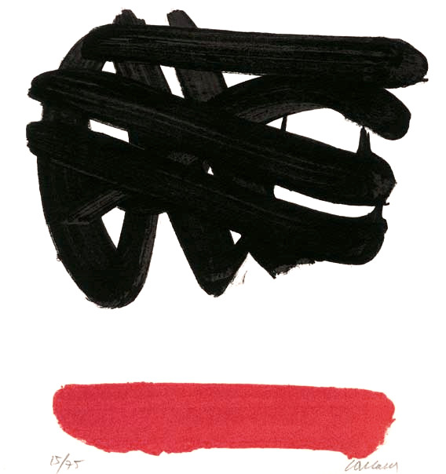

Matrioshka languages have multiple, distinct phases with different syntactic and semantic rules.
There are often two phases; the first gives a set of rules, and the second provides objects on which those rules are to be applied.
Thue is a matrioshka esoteric computer based on string rewriting rules.
A Thue program consists of two parts: a list of substitution rules, which is terminated with a line having both sides of the operator empty, followed by a string representing the initial program state.
#::=Unused rules are comments a::=~Hello Thue! ::= [a] []
Execution consists of picking, from the list of rules, an arbitrary rule whose original string exists as a substring somewhere in the program state, and replacing that substring by the rule's replacement string. This process repeats until there are no rules that can be applied, at which point, the program ends.
#::=Increment binary number 1_::=1++ 0_::=1 01++::=10 11++::=1++0 _0::=_ _1++::=10 ::= _10010011_ _10010100
Thue represents one of the simplest possible constraint-based programming language. It is to the constraint-based paradigm what languages like OISC are to the imperative paradigm.

Input
Added to this simple system are two strings which are used to permit Thue to communicate with the outside world. The first of these is the input symbol (":::"). The input symbol is actually the lhs of an implicit rule of which the user (or system's "input stream") is a component. The input symbol, therefore, is replaced by a line of text received from the "input stream."
Output
As a counterpart of input, the output symbol ("~") is supplied. Like the input symbol, the output symbol triggers an implicit rule which, in this case, encompasses the "output stream." The specific effect is that all text to the right of the output symbol in the rhs of a production is sent to the output stream.
Note that either (or both) of these implicit rules may be overridden by providing explicit rules that perform some other task.
#::=Sierpinski's triangle, backticks are linebreaks
X::=~_
Y::=~*
Z::=~`
_.::=._X
_*::=*_Y
._|::=.Z-|
*_|::=Z
..-::=.-.
**-::=*-.
*.-::=*-*
.*-::=.-*
@.-::=@_.
@*-::=@_*
::=
@_*...............................|
It is pitch black. You are likely to be eaten by a Thue.
- On Esolangs
- Interpreter, written in Uxntal. Video
- Wanda, concatenative language meets string rewriting.
Modal is a matrioshka language based on pattern-matching to rewrite trees.
Modal programs are represented as a series of rules, formatted as tokens delimited by brackets and parentheses, applied to a given tree which gets continually modified until no rules match any given part of the tree.
modal(adj.):
of, or relating to structure as opposed to substance.
Rules are made of:
Tokens
To define a rule, we start a line with <>, followed by a left and right sequence:
<> hello bye .. hello world 00 bye world
Registers
Registers can hold an address in a pattern and be used in rules during rewriting:
<> (copy ?a) (?a ?a) .. copy cat 00 cat cat
When a register is used in a pattern, and when we try to match a given tree with a pattern, each register is bound to a corresponding an address and referenced in either side of a rule:
<> (swap ?x ?y) (?y ?x) .. (swap fox rat) 00 (rat fox)
A register cannot be reassigned during rewriting, it is treated as an equality check:
<> (?x ?x) same .. (fox fox) 00 (same)
Sequences
This allow programs to mimic other programming languages. Any choice made in regard to syntax beyond this point is completely arbitrary. To demonstrate, the following code defines a concatenative syntax:
<> (?x dup) (?x ?x) <> (?x ?y swap) (?y ?x) <> ( ?x pop) () .. (1 2 3) (4 5 6) swap pop dup 01 (4 5 6) (1 2 3) pop dup 02 (4 5 6) dup 00 (4 5 6) (4 5 6)
Logic
Let us build a logic system, starting by comparing two registers:
<> (eq ?x ?x) (#t) <> (eq ?x ?y) (#f) .. (eq fox bat) 01 (#f)
We can implement the truth tables by defining each case:
<> (and (#t) (#t)) (#t) <> (and (#t) (#f)) (#f) <> (and (#f) (#t)) (#f) <> (and (#f) (#f)) (#f) <> (or (#t) (#t)) (#t) <> (or (#t) (#f)) (#t) <> (or (#f) (#t)) (#t) <> (or (#f) (#f)) (#t) <> (not (#t)) (#f) <> (not (#f)) (#t) .. (or (eq cat bat) (eq fox fox)) 11 (or (#f) (eq fox fox)) 10 (or (#f) (#t)) 06 (#t)
Building on the comparison rule above, we can write conditionals:
<> (if (#t) ?b) (?b) <> (if (#f) ?b) () .. (if (eq bat bat) reached!) 02 (if (#t) reached!) 00 (reached!)
Going further, we can create a rule that expects a ternary statement:
<> (ifelse (#t) ?t ?f) (?t) <> (ifelse (#f) ?t ?f) (?f) .. (ifelse (eq cat fox) on-equal on-unequal) 03 (ifelse (#f) on-equal on-unequal) 01 (on-unequal)
Arithmetic
The language does not accomodate for any specific numerical system, but allows for the notion of numbers to be implemented with Church Numerals:
<> (add (s ?x) (s ?y)) (s (add ?x (s ?y))) <> (add (s ?x) (0)) (s ?x) <> (add (0) (s ?y)) (s ?y) <> (add (0) (0)) (0) <> (sub (s ?x) (s ?y)) (sub ?x ?y) <> (sub (s ?x) (0)) (s ?x) <> (sub (0) (s ?y)) (s ?y) <> (sub (0) (0)) (0) <> (mul (s ?x) (s ?y)) (add (s ?x) (mul (s ?x) (sub (s ?y) (s (0))))) <> (mul (s ?x) (s (0))) (s ?x) <> (mul (s (0)) (s ?y)) (s ?y) <> (mul (s ?x) (0)) (0) <> (mul (0) (s ?x)) (0)
To convert from prefix notation to infix:
<> (?x + ?y) (add ?x ?y) <> (?x - ?y) (sub ?x ?y) <> (?x * ?y) (mul ?x ?y)
Altogether, we have enough parts to implement factorial:
<> (factorial (s (0))) ((s (0))) <> (factorial (s ?x)) (((s ?x) * factorial ((s ?x) - (s (0))))) factorial (s (s (s (s (s (0))))))
Type Systems
Creating a type system is merely a matter of creating stricter rules expecting a specific grammar, for example:
<> (join (String ?x) (String ?y)) (?x ?y) .. (join (String hello) (String world)) (join foo bar) 00 (hello world) (join foo bar)
Mimics
We can use rules to define entire languages, for example, we saw above how this can specify a concatenative language with a postfix syntax. Modal enforces no specific notation, for example, we could easily make a lisp or combinatory logic:
<> (M ?x) (?x ?x) <> (KI ?x ?y) (?y) <> (T ?x ?y) (?y ?y) <> (W ?x ?y) (?x ?y ?y) <> (K ?x ?y) (?x) <> (C ?x ?y ?z) (?x ?z ?y) <> (B ?x ?y ?z) (?x (?y ?z)) <> (I ?x) (?x) <> (S ?x ?y ?z) (?x ?z (?y ?z)) .. C KI x y z 05 KI y x z 01 x z
Implementation
The entire Modal runtime can be implemented in a mere 200 lines of ANSI C.
cc modal.c -o modal view raw
- view sources, ANSI C.
- discord channel, in the concatenative server.
- Original creation of wryl, many of the code above is their own work and merely made available here as to give this fantastic system a home on the internet.